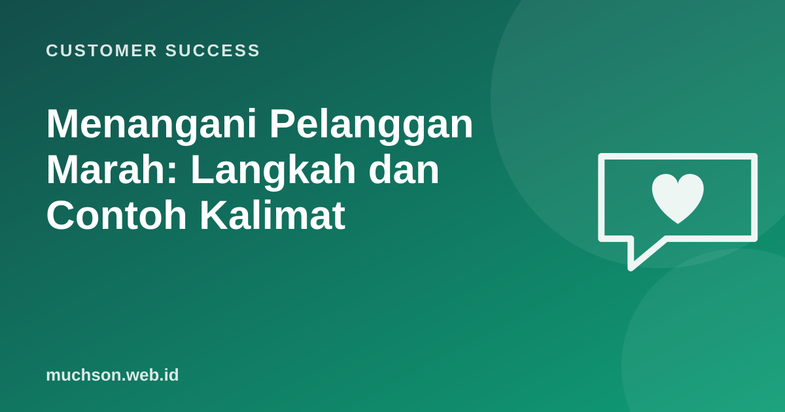

Beranda › Artikel › Customer Success
Customer SuccessMenangani Pelanggan Marah: Langkah dan Contoh Kalimat
Pelanggan yang marah biasanya tidak marah kepada Anda secara pribadi; mereka marah kepada situasinya. Cara menanggapi dalam lima menit pertama sering menentukan apakah mereka pergi dan bercerita buruk kepada orang lain, atau justru menjadi pelanggan setia karena merasa didengar.

Model HEARD
Salah satu kerangka yang populer di dunia layanan adalah HEARD:
Contoh kalimat
| Langkah | Contoh kalimat |
|---|---|
| Mendengar | "Silakan ceritakan dari awal, saya catat supaya tidak ada yang terlewat." |
| Empati | "Wajar sekali Ibu kesal, kacamata yang dijanjikan hari Senin sampai sekarang belum datang." |
| Maaf | "Mohon maaf, ini kesalahan kami dalam memperbarui status pesanan." |
| Menyelesaikan | "Saya sudah cek ke lab: lensa selesai besok pukul 14.00. Kami antar langsung ke rumah tanpa biaya. Apakah itu membantu?" |
| Tindak lanjut | "Besok jam 3 saya kabari lagi lewat WhatsApp untuk memastikan sudah diterima." |
Kalimat yang memperburuk
Lewat chat dan media sosial
- Balas cepat walau belum ada solusi: "Saya sedang cek, 10 menit lagi saya kabari."
- Pindahkan ke kanal privat untuk data pribadi, tetapi tetap jawab secara publik bahwa Anda menanganinya.
- Jangan berdebat di kolom komentar.
- Tulis dengan kalimat pendek dan sopan; huruf kapital semua terbaca seperti berteriak.
Service recovery paradox: benarkah keluhan bisa menjadi peluang?
Gagasannya: pelanggan yang masalahnya diselesaikan dengan sangat baik bisa lebih puas daripada yang tidak pernah bermasalah. Meta-analisis de Matos dan rekan (2007) menemukan efek positif pada kepuasan, tetapi tidak pada niat membeli ulang atau loyalitas yang lebih dalam. Artinya: penanganan yang baik sangat penting, tetapi mencegah masalah tetap lebih baik daripada berharap memulihkannya.
Setelah menyelesaikan keluhan, jalankan langkah terakhir (diagnosis): kenapa ini terjadi, dan apa yang diubah agar tidak terulang. Tanpa itu, tim akan menangani keluhan yang sama setiap minggu.
Tanya jawab
Bagaimana bila pelanggan kasar atau mengancam?
Kapan memberi kompensasi?
Bagaimana menjaga mental tim yang sering menerima keluhan?
Sumber dan bacaan lanjut
- de Matos, Henrique, Rossi (2007): Service Recovery Paradox, A Meta-Analysis, Journal of Service Research
- Chatbot AI layanan pelanggan (artikel terkait)
- Umpan balik yang efektif (artikel terkait)